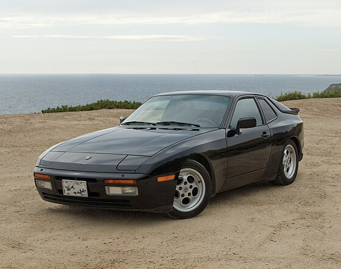
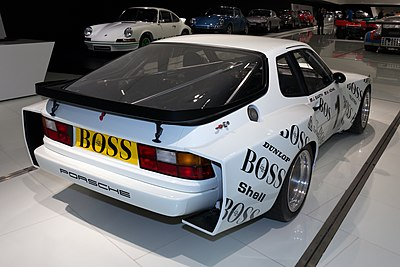
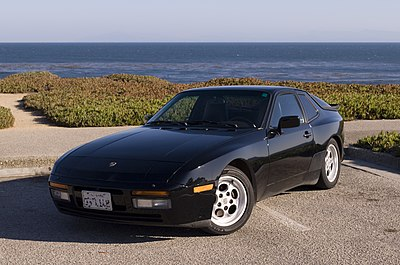
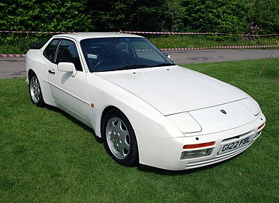

Introduction
The Porsche 944 is a sports car manufactured by German automobile manufacturer Porsche from 1982 until 1991. A front-engine, rear-wheel drive mid-level[citation needed] model based on the 924 platform, the 944 was available in coupé or cabriolet body styles, with either naturally aspirated or turbocharged engines. With over 163,000 cars produced, the 944 was the most successful sports car in Porsche's history until the introductions of the Boxster and 997 Carrera.[1][2] Extensive design revisions for the 1992 model year prompted Porsche to drop the 944 nameplate and rebrand the vehicle as the 968.
Overview
| Category | Details |
|---|---|
| Manufacturer | Porsche AG |
| Production | 1982–1991 |
| Assembly | Germany: Neckarsulm, Stuttgart |
| Designer | Harm Lagaay (Porsche AG) |
| Class | Sports car (S) |
| Body Style | 2-door coupé, 2-door convertible |
| Layout | Front mid-engine, rear-wheel-drive |
| Engines | 2.5 L M44/40 I4, 2.5 L M44/51, M44/52 turbo I4, 2.7 L M44/12 I4, 3.0 L M44/41 I4 |
| Transmission | 3-speed automatic, 5-speed manual |
| Wheelbase | 2,400 mm (94.5 in) |
| Length | 1986–1988: 4,318 mm (170.0 in), Turbo & S2: 4,288 mm (168.8 in), 1989–1991: 4,290 mm (168.9 in) |
| Width | 1,735 mm (68.3 in) |
| Height | 1,275 mm (50.2 in) |
| Curb Weight | Pre-1988: 1,180 kg (2,601 lb), 1988 onwards: 1,330 kg (2,932 lb), 1986 Turbo models: 1,360 kg (2,998 lb), 1987 onwards (Turbo models): 1,416 kg (3,122 lb) |
| Predecessor | Porsche 924 |
| Successor | Porsche 968 |
History
The 924 had originally been a project of VW-Porsche, a joint Porsche/Volkswagen company incorporated to develop and produce the 914 which was sold in Europe badged as both a Porsche and a Volkswagen. In 1972, a replacement for the Volkswagen version of the 914, code named EA-425 began development. The model was to be sold as an Audi as part of the VW-Audi-Porsche marketing arrangement. Porsche was to manufacture its own version of the car.[3] At one point, Volkswagen head Rudolf Leidig declared the EX-425 was going to be a Volkswagen exclusively, thus denying Porsche's version of the 914's replacement. Although testing had begun in the Spring of 1974, Volkswagen cancelled the EX-425 program, the reason being significant financial losses due to declining sales and rising development costs for new vehicles as well as the departure of Leidig. The recently introduced Volkswagen Scirocco was expected to fill the sports coupé market segment and the unfinished project was handed over to Audi to serve as the replacement for the Audi 100.[4]
The cancellation of the EX-425 program led Porsche to market an entry-level car to replace the 912E, which was a US-only stop-gap model for 1976, and their version of the 914, which was discontinued in 1975. Porsche purchased the design and the finished development mule with a Bosch K-Jetronic mechanical fuel injection system from Volkswagen. The vehicle, dubbed the 924, received positive reviews, but was criticised by Porsche enthusiasts for its Audi-sourced 2.0 L engine. In 1979, Porsche introduced a Turbocharged version of the 924 to increase performance, but this model carried a high price. Rather than scrapping the model from its line-up, Porsche decided to develop the 944, as they had done with generations of the 911; although model numbers would change, the 924 would provide the basis for this new mid level model.
The prototype of this mid level model debuted at LeMans in 1981, an unusual strategy implemented by Porsche at the time. Called the 924 GTP LeMans, the car was based on the 924 Carrera GT LeMans that competed in the event prior to the GTP's introduction. The most noticeable change in the new race car was the departure from the Audi sourced 2.0 L inline-4 engine in favour of the 2.5 L engine developed by Porsche. The new engine was mounted at an angle of 45 degree to the right and utilised a dual overhead camshaft along with counter rotating balance shafts, an unusual feature for its time that provided better weight distribution and ensured smooth power delivery by eliminating inherent vibrations resulting in the engine lasting longer. A single KKK turbocharger producing 15.5 psi (1.1 bar) enabled the engine to generate a maximum power output of 420 PS (309 kW; 414 hp) at 6,800 rpm. The engine also utilised Bosch's prototype Motronic engine management system to control ignition timing, fuel injection and boost pressure. The new race car proved to be much more fuel efficient than its predecessor, stopping only 21 times in 24 hours for fuel. The 924 GTP managed seventh position overall behind the race winning 936 and a class win at the GTP+ 3.0 category[5][6] in 1981 before being retired and stored in the Porsche museum. In 1982, Porsche debuted the production road legal version of the race car, called the 944. The car utilised many technologies its race bred sibling had used, including the balance shafts and the engine management system, but power was toned down for safety purposes.[7][8]
The new all-alloy 2,479 cc (2.5 L; 151.3 cu in) inline-four engine, with a bore of 100 mm (3.94 in) and stroke of 78.9 mm (3.11 in), was in essence, half of the later 928's 5.0 L V8 engine, although very few parts were actually interchangeable. Not typical in luxury sports cars, the four-cylinder engine was chosen for fuel efficiency and size, because it had to be fitted from below on the Neckarsulm production line. To overcome roughness caused by the unbalanced secondary forces that are typical of inline four-cylinder engines, Porsche included two counter-rotating balance shafts running at twice the engine speed. Invented in 1904 by British engineer Frederick Lanchester, and further developed and patented in 1975 by Mitsubishi Motors, balance shafts carry eccentric weights which produce inertial forces that balance out the unbalanced secondary forces, making a four-cylinder engine feel as smooth as a six-cylinder engine. Porsche spent some time trying to develop their own system, but when they realised that they could not improve on the system developed by Mitsubishi, they chose to pay the licensing fees rather than come up with a variation just different enough to circumvent the patent.[9] The licensing fees were about US$7–8 per car, which translated to about US$100 (equivalent to $316 in 2023) for the consumer to pay.[9] The engine was factory-rated at 150 hp (112 kW; 152 PS) in its U.S. configuration. Revised bodywork with wider wheel arches, similar to that of the 924 Carrera GT, a fresh interior and upgrades to the braking and suspension systems rounded out the major changes.
Models
| Year | Model | Power | Engine |
|---|---|---|---|
| 1982–1987 | 944 | 163 PS (120 kW; 161 hp) US 1982–1985: 143 hp (107 kW) US 1985–1987: 147 hp (110 kW) |
2.5 L M44/40 I4 |
| 1988 | 944 | 160 PS (118 kW; 158 hp) | |
| 1987–1989 | 944 S | 190 PS (140 kW; 187 hp) | |
| 1989 | 944 | 165 PS (121 kW; 163 hp) | 2.7 L M44/12 I4 |
| 1989–1991 | 944 S2 | 211 PS (155 kW; 208 hp) | 3.0 L M44/41 I4 |
| 1985–1988 | 944 Turbo (951) | 220 PS (162 kW; 217 hp) | 2.5 L M44/51 turbocharged I4 |
| 1988 | 944 Turbo S (951) | 250 PS (184 kW; 247 hp) | 2.5 L M44/52 turbocharged I4 |
| 1989–1991 | 944 Turbo (951) | 250 PS (184 kW; 247 hp) |
Porsche 944
.jpg)
The Porsche 944 was produced from 1982 to 1991, and it was a front-engine, rear-wheel-drive sports car. It succeeded the Porsche 924 and was praised for its handling and balance.
Porsche 944 Turbo and Turbo S
The Porsche 944 Turbo, introduced in 1985, offered significant performance improvements with a turbocharged 2.5L engine. It was the most expesnize and fastest verion of the 944. Later a Turbo S version was luanched with additonal improvments
Porsche 944S
.jpg)
The Porsche 944S, launched in 1987 and only in production until 1988, featured a 2.5L 16-valve DOHC engine that delivered improved performance over the base model.
Porsche 944S2
The Porsche 944S2, produced from 1989 to 1991, had a 3.0L engine and represented the highest evolution of the naturally aspirated 944 series. It was a updated and more powerful version of the 944S.